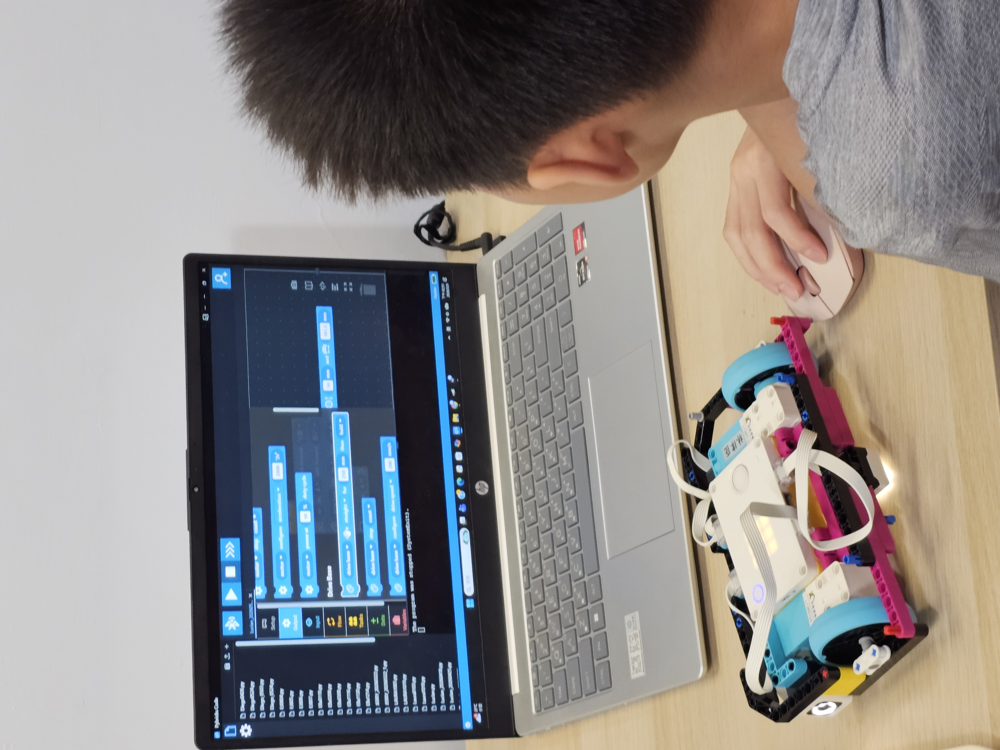

建立文字程式基礎
從變數、型別、條件與迴圈，進一步認識函式、模組套件和例外處理。
Python 程式班
從 Python 基礎開始，透過小遊戲與實用工具，把問題拆成步驟，再用程式一步步完成。
預約免費體驗 ↗看看孩子會學什麼 ↓FIND THEIR START
想在電腦上創作小遊戲或實用工具，願意練習有條理地思考與解題的孩子。
6–12 年級｜小六 — 高三。老師會依孩子的經驗與學習狀況，協助確認班別。
MAKE. TEST. DISCOVER.
從變數、型別、條件與迴圈，進一步認識函式、模組套件和例外處理。
練習字串、列表、字典、集合及巢狀結構，把資料用在情境任務中。
透過流程圖、偽程式與單元測試，在小遊戲、自動化工具和簡易爬蟲中練習。
A CLOSER LOOK
終端小遊戲、日常自動化與簡易爬蟲，是課程的專題方向。從需要哪些資料、如何安排步驟開始，逐步建立程式作品。
從實作出發，讓學習看得見。
LEARNING BY DOING
從一個創作目標出發，思考需要哪些步驟。
觀察作品與預期的差別，練習說明發現。
在老師引導下調整與測試，累積解決問題的經驗。
NT$ 7,800 / 一期
體驗課程與時間，由老師與您聯絡確認。
A FEW THINGS TO KNOW
需要自備 Windows 或 macOS 筆電。若不確定現有設備是否適合，可先透過 LINE 與教室確認。
一期 12 堂，每堂 1.5 小時，課程費 NT$ 7,800。需自備 Windows 或 macOS 筆電。實際上課時段由教室協助確認。
可以先預約免費體驗，讓老師了解孩子的年級、學習經驗與興趣，再協助確認班別。
收到確認信後，請加入官方 LINE，主動傳訊息告知孩子姓名。老師會與您確認課程及體驗時間。